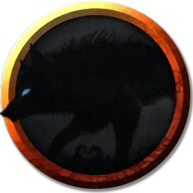

Гончая дурного знамения
Hound of Ill Omen
Средний Монстр, без мировоззрения

Класс Доспеха 14 (природный доспех)
Хиты 37 (5к10 + 10)
Скорость 50 футов
| мод | спас | ||
|---|---|---|---|
| СИЛ | 17 | +3 | +3 |
| ЛОВ | 15 | +2 | +2 |
| ТЕЛ | 15 | +2 | +2 |
| мод | спас | ||
|---|---|---|---|
| ИНТ | 3 | −4 | −4 |
| МДР | 12 | +1 | +1 |
| ХАР | 7 | −2 | −2 |
Навыки Восприятие +3, Скрытность +4
Чувства пассивное Восприятие 13
Опасность 1 (200 опыта)
Бонус мастерства +2
Особенности
Острый слух и тонкий нюх. Гончая совершает с преимуществом проверки Мудрости (Восприятие), полагающиеся на слух и обоняние.
Тактика стаи. Гончая совершает с преимуществом броски атаки по существу, если в пределах 5 футов от этого существа находится как минимум один дееспособный союзник гончей.
Особенности теневой гончей. Теневая гончая обладает следующими особенностями:
• Гончая появляется с количеством временных хитов, равных половине уровня чародея.
• Гончая может перемещаться через других существ и объекты, как если бы они были труднопроходимой местностью.
• Гончая получает 5 урона силовым полем, если она завершает свой ход внутри объекта.
• В начале своего хода гончая автоматически узнает местоположение своей цели. Если она была спрятанной, то перестает быть спрятанной от гончей.
• Гончая появляется в свободном пространстве по выбору чародея в радиусе 30 футов от цели. Совершите проверку инициативы для гончей.
• В свой ход, она может двигаться только к своей цели по самому прямому маршруту, и она может использовать свое действие только для атаки своей цели. Гончая может совершать провоцированные атаки, но только против своей цели. Кроме того, в то время как гончая находится в пределах 5 футов от цели, цель имеет помеху на спасброски против любого заклинания, которое вы накладываете.
Гончая исчезает, если её хиты уменьшаются до 0, если хиты её цели уменьшены до 0 или спустя 5 минут.
Действия
Укус. Рукопашная атака оружием: +5 к попаданию, досягаемость 5 футов, одна цель. Попадание: 10 (2к6 + 3) колющего урона. Если цель — существо, она должна преуспеть в спасброске Силы Сл 13, иначе будет сбита с ног.
Описание
На 6-м уровне чародей теневой магии получает возможность вызвать воющее существо тьмы, чтобы преследовать своих врагов. Бонусным действием он может потратить 3 единицы чародейства, чтобы магически вызвать гончую дурного знамения, нацеливая её на одно существо, которое может видеть в радиусе 120 футов от себя.